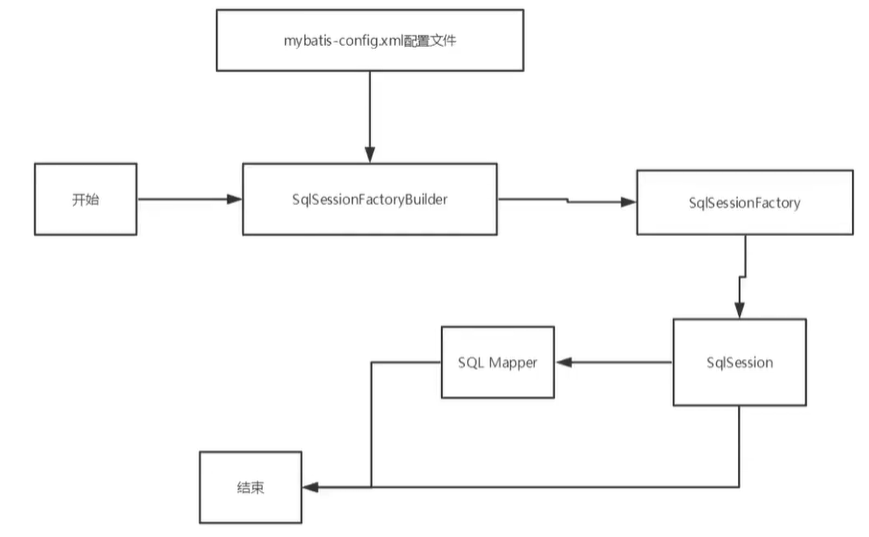
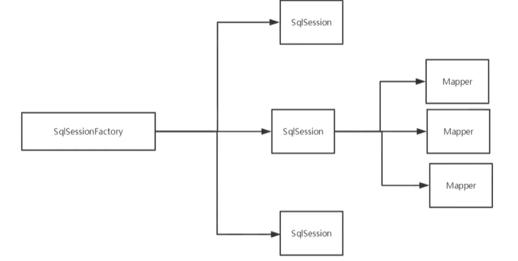
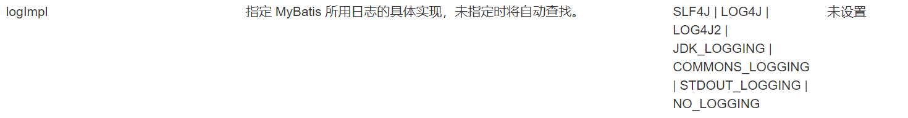
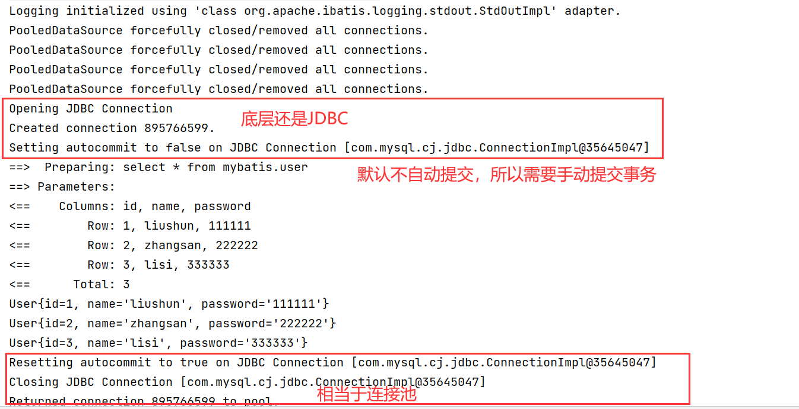

Mybatis
MyBatis 是一款优秀的持久层框架，它支持自定义 SQL、存储过程以及高级映射。
MyBatis 免除了几乎所有的 JDBC 代码以及设置参数和获取结果集的工作。
MyBatis 可以通过简单的 XML 或注解来配置和映射原始类型、接口和 Java POJO（Plain Old Java Objects，普通老式 Java 对象）为数据库中的记录。
https://mybatis.org/mybatis-3/zh/getting-started.html
xxxxxxxxxx61<!-- https://mvnrepository.com/artifact/org.mybatis/mybatis -->2<dependency>3 <groupId>org.mybatis</groupId>4 <artifactId>mybatis</artifactId>5 <version>3.5.7</version>6</dependency>持久化是一个操作，持久层是一个名词
持久化是指将数据保存到文件或者数据库中，持久层是进行操作持久化的地方
驱动配置
xxxxxxxxxx201<!-- mysql 驱动 -->2 <dependency>3 <groupId>mysql</groupId>4 <artifactId>mysql-connector-java</artifactId>5 <version>8.0.26</version>6 </dependency>7<!-- mybatis 驱动-->8 <!-- https://mvnrepository.com/artifact/org.mybatis/mybatis -->9 <dependency>10 <groupId>org.mybatis</groupId>11 <artifactId>mybatis</artifactId>12 <version>3.5.7</version>13 </dependency>14<!-- junit 单元测试 -->15 <dependency>16 <groupId>junit</groupId>17 <artifactId>junit</artifactId>18 <version>4.12</version>19 <scope>test</scope>20 </dependency>由于maven约定大于配置，所以需要配置resources 防止资源导出失败
xxxxxxxxxx201<build>2 <resources>3 <resource>4 <directory>src/main/resources</directory>5 <includes>6 <include>**/*.properties</include>7 <include>**/*.xml</include>8 </includes>9 <filtering>true</filtering>10 </resource>11 <resource>12 <directory>src/main/java</directory>13 <includes>14 <include>**/*.properties</include>15 <include>**/*.xml</include>16 </includes>17 <filtering>true</filtering>18 </resource>19 </resources>20 </build>mybatis工具类，相当于JDBC中的PreparedStatement，用来执行数据库操作
SqlSession 提供了在数据库执行 SQL 命令所需的所有方法
xxxxxxxxxx211//获得SqlSession对象2public class MybatisUtils {3
4 private static SqlSessionFactory sqlSessionFactory;5 static {6 try {7 //获得SqlSessionFactory实例8 String resource = "mybatis-config.xml";9 InputStream inputStream = Resources.getResourceAsStream(resource);10 sqlSessionFactory = new SqlSessionFactoryBuilder().build(inputStream);11 } catch (IOException e) {12 e.printStackTrace();13 }14 }15
16 //既然有了 SqlSessionFactory，顾名思义，我们可以从中获得 SqlSession 的实例。17 // SqlSession 提供了在数据库执行 SQL 命令所需的所有方法。你可以通过 SqlSession 实例来直接执行已映射的 SQL 语句18 public static SqlSession getSqlSession(){19 return sqlSessionFactory.openSession();20 }21}编写UserMapper.xml来代替UserMapper接口的实现类
xxxxxxxxxx101 这里要是UTF8不能有-2 4 5<!--namespace 唯一绑定dao的接口-->6<mapper namespace="com.shun.dao.UserMapper">7 <select id="getUserList" resultType="com.shun.pojo.User">8 select * from mybatis.user9 </select>10</mapper>重要的是mybatis-config.xml的配置每一个Mapper.xml文件，都需要注册，最好使用绝对路径
xxxxxxxxxx201 2 4 5<configuration>6 <environments default="development">7 <environment id="development">8 <transactionManager type="JDBC"/>9 <dataSource type="POOLED">10 <property name="driver" value="com.mysql.cj.jdbc.Driver"/>11 <property name="url" value="jdbc:mysql://localhost:3306/mybatis?useSSL=true&userUnicode=true&characterEncoding=UTF-8"/>12 <property name="username" value="root"/>13 <property name="password" value=".20010404liushun"/>14 </dataSource>15 </environment>16 </environments>17 <mappers>18 <mapper resource="com/shun/dao/UserMapper.xml"/>19 </mappers>20</configuration>增删改必须要提交事务才能真正写入数据库
mybatis是默认开启事务的，并且是默认不自动提交的
参数一般用Map来实现，而不是使用对象
xxxxxxxxxx91//获得对象2SqlSession sqlSession = MybatisUtils.getSqlSession();3
4//执行5UserMapper mapper = sqlSession.getMapper(UserMapper.class);6int ddd = mapper.addUser(new User(4, "ddd", "1111111"));7
8sqlSession.commit();9sqlSession.close();db.properties
xxxxxxxxxx41driver=com.mysql.cj.jdbc.Driver2url=jdbc:mysql://localhost:3306/mybatis?useSSL=true&userUnicode=true&characterEncoding=UTF-83username=root4password=.20010404liushunmybatis-config.xml
xxxxxxxxxx21<!-- 引入外部配置文件 -->2 <properties resource="db.properties"/>xxxxxxxxxx61<!-- 使用相对于类路径的资源引用 -->2<mappers>3 <mapper resource="org/mybatis/builder/AuthorMapper.xml"/>4 <mapper resource="org/mybatis/builder/BlogMapper.xml"/>5 <mapper resource="org/mybatis/builder/PostMapper.xml"/>6</mappers>xxxxxxxxxx61<!-- 使用映射器接口实现类的完全限定类名 -->2<mappers>3 <mapper class="org.mybatis.builder.AuthorMapper"/>4 <mapper class="org.mybatis.builder.BlogMapper"/>5 <mapper class="org.mybatis.builder.PostMapper"/>6</mappers>xxxxxxxxxx41<!-- 将包内的映射器接口实现全部注册为映射器 -->2<mappers>3 <package name="org.mybatis.builder"/>4</mappers>后面两种方式要求：
实体类和Mapper配置文件必须同名且在同一包下

作用域和生命周期类别是至关重要的，因为错误的使用会导致非常严重的并发问题
一旦创建了 SqlSessionFactory，就不再需要它
局部变量
说白了就是数据库连接池
SqlSessionFactory 一旦被创建就应该在应用的运行期间一直存在，没有任何理由丢弃它或重新创建另一个实例
因此 SqlSessionFactory 的最佳作用域是应用作用域
最简单的就是使用单例模式或者静态单例模式
等价于连接到连接池的一个请求
SqlSession 的实例不是线程安全的，因此是不能被共享的，所以它的最佳的作用域是请求或方法作用域
用完之后需要立即关闭，否则就会一直占用资源
换句话说，每次收到 HTTP 请求，就可以打开一个 SqlSession，返回一个响应后，就关闭它

每一个Mapper，就代表一个具体的业务
解决字段名和属性名不一致的问题
有两种方式
xxxxxxxxxx201方式一2<select id="selectUsers" resultType="User">3 select4 user_id as "id",5 user_name as "userName",6 hashed_password as "hashedPassword"7 from some_table8 where id = #{id}9</select>10方式二11<resultMap id="userResultMap" type="User">12 <id property="id" column="user_id" />13 <result property="username" column="user_name"/>14 <result property="password" column="hashed_password"/>15</resultMap>16<select id="selectUsers" resultMap="userResultMap">17 select user_id, user_name, hashed_password18 from some_table19 where id = #{id}20</select>
xxxxxxxxxx31<settings>2 <setting name="logImpl" value="STDOUT_LOGGING"/>3</settings>
Log4j是Apache的一个开源项目，通过使用Log4j，我们可以控制日志信息输送的目的地是控制台、文件、GUI组件；
我们也可以控制每一条日志的输出格式；
通过定义每一条日志信息的级别，我们能够更加细致地控制日志的生成过程
这些可以通过一个配置文件来灵活地进行配置，而不需要修改应用的代码
xxxxxxxxxx61<!-- https://mvnrepository.com/artifact/log4j/log4j -->2<dependency>3 <groupId>log4j</groupId>4 <artifactId>log4j</artifactId>5 <version>1.2.17</version>6</dependency>xxxxxxxxxx241#将等级为DEBUG的日志信息输出到console和file这两个目的地2log4j.rootLogger = DEBUG, console, file3
4#控制台输出的相关设置5log4j.appender.console = org.apache.log4j.ConsoleAppender6log4j.appender.console.Target = System.out7log4j.appender.console.threshold = DEBUG8log4j.appender.console.layout = org.apache.log4j.PatternLayout9log4j.appender.console.layout.ConversionPattern = [%c]-%m%n10
11#文件输出的相关设置12log4j.appender.file = org.apache.log4j.RollingFileAppender13log4j.appender.file.File = ./log/shun.log14log4j.appender.file.MaxFileSize = 10mb15log4j.appender.file.threshold = DEBUG16log4j.appender.file.layout = org.apache.log4j.PatternLayout17log4j.appender.file.layout.ConversionPattern = [%p][%d{yy-mm-dd}][%c]%m%n18
19#日志输出级别20log4j.logger.org.mybatis = DEBUG21log4j.logger.java.sql = DEBUG22log4j.logger.java.sql.Statement = DEBUG23log4j.logger.java.sql.ResultSet = DEBUG24log4j.logger.java.sql.PreparedStatement = DEBUGxxxxxxxxxx11import org.apache.log4j.Logger;xxxxxxxxxx11Logger logger = Logger.getLogger(UserMapperTest.class);xxxxxxxxxx31logger.info("info");2logger.debug("debug");3logger.error("error");xxxxxxxxxx21//分页查询用户2List<User> getUserByLimit(HashMap<String, Integer> map);xml
xxxxxxxxxx31<select id="getUserByLimit" parameterType="map" resultType="com.shun.pojo.User">2 select * from user limit #{startIndex}, #{pageSize}3</select>测试
xxxxxxxxxx141SqlSession sqlSession = MybatisUtils.getSqlSession();2UserMapper mapper = sqlSession.getMapper(UserMapper.class);3
4HashMap<String, Integer> stringIntegerHashMap = new HashMap<>();5stringIntegerHashMap.put("startIndex", 1);6stringIntegerHashMap.put("pageSize", 2);7
8List<User> userByLimit = mapper.getUserByLimit(stringIntegerHashMap);9
10for (User user : userByLimit) {11 System.out.println(user);12}13
14sqlSession.close();方式一相当于子查询，方式二为联表查询
xxxxxxxxxx161<! --思路:21.查询所有的学生信息32．根据查询出来的学生的tid，寻找对应的老师!4-->5<select id="getstudent" resu1tMap="StudentTeacher">6 select * from student7</select>8<resultMap id="StudentTeacher" type="Student">9 <result property="id" column="id" />10 <result property="name" column="name" / >11 <!--复尔的属性，我们需要单独处理 对象:association,集合:collection -->12 <association property="teacher" column="tid" javAType="Teacher" select="getTeacher" />13</resu1tMap>14<select id="getTeacher" resultType="Teacher">15 select * from teacher where id =#{id}16</select> xxxxxxxxxx131<!--按照结果嵌套处理-->2<select id="getStudent2" resultMap="StudentTeacher2">3 select s.id sid,s.name sname,t.name tname4 from student s,teacher t5 where s.tid = t.id;6</select>7<resultMap id="StudentTeacher2" type="Student">8 <result property="id" column="sid"/>9 <result property="name" column="sname" / >10 <association property="teacher" javaType="Teacher">11 <result property="name" column="tname"/>12 </association>13</resultMap>xxxxxxxxxx151<!--按结果欣套查询-->2<select id="getTeacher" resultMap="TeacherStudent">3 select s.id sid, s.name sname，t.name tname,t.id tidfrom student s,teacher t4 where s.tid = t.id and t.id = #{tid}5</select>6<resultMap id="TeacherStudent" type="Teacher">7 <result property="id" column="tid"/>8 <result property="name" column="tname" / >9 <!--复杂的属性，我们需要单独处理对象:association 集合: collectionjavaType=""指定属性的类型!10 集合中的泛型信息，我们使用ofType获取-->11 <collection property="students" ofType="Student">12 <result property="id" column="sid"/>13 <result property="name" column="sname"/ ><result property="tid" column="tid" />14 </collection>15</resultMap>指根据不同的条件生成不同的SQL语句
一般是一个hashMap<String, String>
参数传入title，就追加if语句内容
if语句可重复使用
xxxxxxxxxx81<select id="findActiveBlogWithTitleLike"2 resultType="Blog">3 SELECT * FROM BLOG4 WHERE state = ‘ACTIVE’5 <if test="title != null">6 AND title like #{title}7 </if>8</select>只会选择一个，当title成立，就优先title，如果都没有就选择otherwise
xxxxxxxxxx151<select id="findActiveBlogLike"2 resultType="Blog">3 SELECT * FROM BLOG WHERE state = ‘ACTIVE’4 <choose>5 <when test="title != null">6 AND title like #{title}7 </when>8 <when test="author != null and author.name != null">9 AND author_name like #{author.name}10 </when>11 <otherwise>12 AND featured = 113 </otherwise>14 </choose>15</select>where标签可以去除开头多余的and，
set标签可以去除末尾多余的逗号，
trim自定义标签
xxxxxxxxxx341<select id="findActiveBlogLike"2 resultType="Blog">3 SELECT * FROM BLOG4 <where>5 <if test="state != null">6 state = #{state}7 </if>8 <if test="title != null">9 AND title like #{title}10 </if>11 <if test="author != null and author.name != null">12 AND author_name like #{author.name}13 </if>14 </where>15</select>16<!--与where等价的自定义标签 -->17<trim prefix="WHERE" prefixOverrides="AND |OR ">18 ...19</trim>20
21<update id="updateAuthorIfNecessary">22 update Author23 <set>24 <if test="username != null">username=#{username},</if>25 <if test="password != null">password=#{password},</if>26 <if test="email != null">email=#{email},</if>27 <if test="bio != null">bio=#{bio}</if>28 </set>29 where id=#{id}30</update>31<!--与set等价的自定义标签 -->32<trim prefix="SET" suffixOverrides=",">33 ...34</trim>foreach 元素的功能非常强大，它允许你指定一个集合，声明可以在元素体内使用的集合项（item）和索引（index）变量。它也允许你指定开头与结尾的字符串以及集合项迭代之间的分隔符。这个元素也不会错误地添加多余的分隔符
你可以将任何可迭代对象（如 List、Set 等）、Map 对象或者数组对象作为集合参数传递给 foreach。当使用可迭代对象或者数组时，index 是当前迭代的序号，item 的值是本次迭代获取到的元素。当使用 Map 对象（或者 Map.Entry 对象的集合）时，index 是键，item 是值。
xxxxxxxxxx91<select id="selectPostIn" resultType="domain.blog.Post">2 SELECT *3 FROM POST P4 WHERE ID in5 <foreach item="item" index="index" collection="list"6 open="(" separator="," close=")">7 #{item}8 </foreach>9</select>